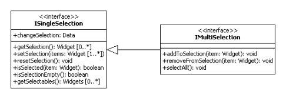

Selection Handling¶
The framework contains several widgets which support selection handling. These are divided into widgets that support Single Selection and others that support Multi Selection. A widget which supports multi selection also supports single selection.
Here is a list of widgets which support single and/or multi selection:
- Multi Selection:
- Single Selection:
Selection Interfaces¶

Event¶
Both selections fire a changeSelection event if the selection has changed. Listeners can register with the event to be notified about the changes. The event contains an array with the newly selected widgets. If the array is empty, that means no widgets are selected.
list.addListener("changeSelection", function(e)
{
var selection = e.getData();
for (var i = 0; i < selection.lenght; i++) {
this.debug("Selected item: " + selection[i]);
}
}, this);
Selection Methods¶
The ISingleSelection interface specifies the methods for single selection handling. Since the methods of the single selection interface are re-used, the IMultiSelection only extends the interface with methods for multi selection handling.
Re-using the methods requires a uniform handling for setting and getting the current selection. This has been achieved by using an array for the selection handling, see setSelection and getSelection.
Single Selection¶
The listed single selection widgets above implement the ISingleSelection. To implement the behavior they use the MSingleSelectionHandling mixin. This mixin offers the methods for selection handling and also initializes the manager for selection management.
The widget itself configures the mixin to allowing an empty selection or not. Dependent on the configuration, resetSelection clears the current selection (empty array) or selects the first selectable element.
User interactions (mouse and keyboard) are managed from the widget, which only calls the selection methods if the user interaction has an effect on the selection. So the selection management and the user interaction handling are separated. This is one thing that has changed with the new selection API.
Multi Selection¶
The multi selection implementation has hardly changed at all. The widgets supporting multi selection, also listed above, have already used a mixin called MSelectionHandling for selection handling. Like the mixin for the single selection, it offers the selection methods and initializes the selection manager. The mixin has only been changed to conform to the new IMultiSelection interface.
Selection Modes¶
Due to the small changes the configuration for the selection mode hasn't changed. The widgets also support the property selectionMode with these different modes:
- single: Only one element or none at all can be selected.
- one: Exactly one item is selected if possible. The first selectable item is selected per default.
- multi: Multiple items can be selected by using the modifier keys together with mouse or keyboard actions. This type also allows empty selections.
- adaptive: Easy Web-2.0 selection mode: multiple items can be selected without modifier keys. Empty selections are possible.
Note
Multi and Adaptive selections dealing with selection ranges, Single and One dealing with one selected item.
list.setSelectionMode("multi");
Selection Options¶
These options change the way a selection is created or modified. By default, items can be selected by holding down the mouse button and hovering them or by holding down the modifier key and pressing the arrow keys to traverse them.
- Quick: One item can be selected by hovering it (no need to click on it or hit keys) Only possible for the modes single and one.
- Drag: Multiselection of items through dragging the mouse in pressed states. Only possible for the modes multi and additive.
list.setDragSelection(true);
How to use the selection API¶
Single Selection¶
The example below shows how to use the single selection API. This example uses the SelectBox widget:
// creates the SelectBox
var selectBox = new qx.ui.form.SelectBox();
this.getRoot().add(selectBox, {top: 20, left: 20});
// registers the listener
selectBox.addListener("changeSelection", function(event) {
this.debug("Selected (event): " + event.getData()[0].getLabel());
}, this);
// creates the items and select one of them
for (var i = 0; i < 10; i++)
{
var item = new qx.ui.form.ListItem("ListItem" + i);
selectBox.add(item);
if (i == 5) {
selectBox.setSelection([item]);
}
}
this.debug("Selected (selectBox): " + selectBox.getSelection()[0].getLabel());
The output should be:
(1) Selected (event): ListItem0
(2) Selected (event): ListItem5
(3) Selected (selectBox): ListItem5
The SelectBox's implementation doesn't allow empty selections, so if the first item is added to the SelectBox it will be selected (1). (2) occurs due to the selection and (3) from getSelection.
Multi Selection¶
The next example uses the List widget:
// creates the List and sets the selection mode
var list = new qx.ui.form.List();
list.setSelectionMode("multi");
this.getRoot().add(list, {top: 20, left: 20});
// registers the listener
list.addListener("changeSelection", function(event) {
this.debug("Selection (event): " + event.getData());
}, this);
// creates the items
for (var i = 0; i < 10; i++)
{
var item = new qx.ui.form.ListItem("ListItem" + i);
list.add(item);
}
// sets selection
list.setSelection([list.getChildren()[1], list.getChildren()[4]]);
this.debug("Selection (list): " + list.getSelection());
The output should look like this:
(1) Selection (event): qx.ui.form.ListItem[1p],qx.ui.form.ListItem[2a]
(2) Selection (list): qx.ui.form.ListItem[1p],qx.ui.form.ListItem[2a]